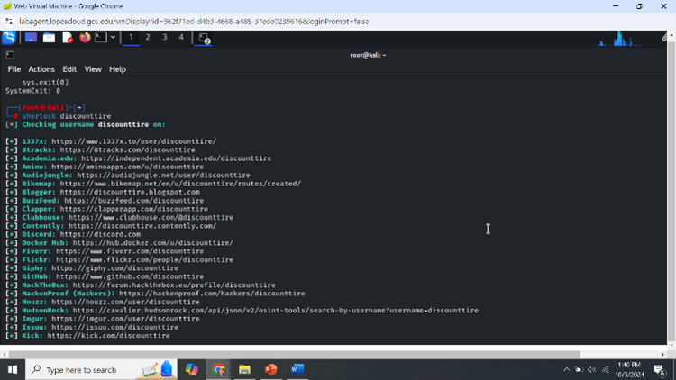
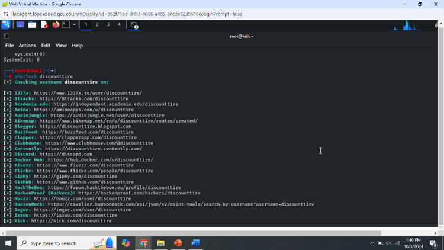

Description
This project demonstrates a penetration testing engagement performed within a controlled laboratory. It covers the full testing lifecycle: passive OSINT, automated reconnaissance, network scanning (Nmap), vulnerability assessment (OpenVAS), exploitation demonstrations (Metasploit, lab-only), and payload testing in an isolated sandbox.
Disclaimer
LAB ONLY — All actions were performed in isolated virtual machines under explicit educational permission. This report is for learning and remediation planning only.
Environments
- Attacker: Kali Linux (VM)
- Targets: Ubuntu server (lab), Windows XP / Server 2003 (lab)
- Network: Isolated VM network — no external testing
Languages & Utilities
Executive Summary
The lab assessment found outdated services, weak encryption, and misconfigurations. Demonstrated impact included potential privilege escalation and data access. Recommended: patching, remove EOL systems, harden TLS/SSH, restrict management ports, and deploy endpoint monitoring.
Findings & Recommendations
Passive OSINT
Public metadata and subdomains discovered. Recommendation: audit public docs and enforce data hygiene.
Network Scanning (Nmap)
Open ports and outdated service versions discovered. Recommendation: patch/upgrade and restrict ports via firewall/VPN.
Vulnerability Assessment (OpenVAS)
Weak ciphers/cleartext flagged. Recommendation: enforce modern TLS/SSH and remove obsolete protocols.
Exploitation (Lab-only)
Exploits validated impact; command-level and payload details are kept securely in the lab notebook. Recommendation: enable EDR and re-scan post-remediation.
Evidence (Lab Screenshots)
 



All screenshots were captured from an isolated lab network for educational purposes (ITT-340). Replace filenames if your images differ.
Conclusion & Next Steps
Prioritize patching and replacement of EOL systems; harden network services; implement centralized logging and detection; schedule a follow-up verification scan and remediation audit.